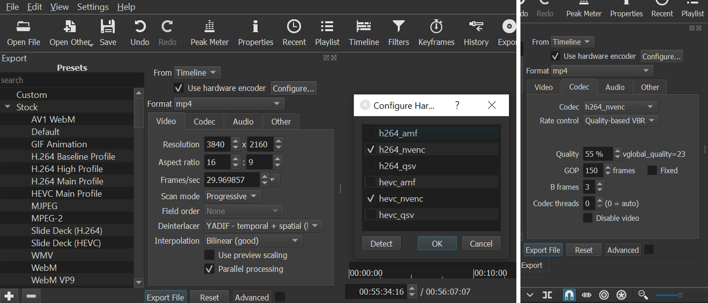

I have recorded and published dozens of in-cockpit flight videos ever since my PPL training videos to the present. For a long time now, I have received many questions on how are these videos produced.
Therefore I decided to write this blog post to address these questions as the video production and editing process is not as straightforward as it may seem.
A typical flight video of mine will include the following media tracks:
- Primary front-facing footage
- Secondary inward-facing shot towards the passengers
- Cockpit ambient and environmental sounds
- ATC/intercom audio
- Flight telemetry gauges
Below are some sample videos with these tracks:
This is a short clip of a takeoff and landing sequence.
I may also mount the secondary camera on my neck instead if I want to capture something else like the instrument panel during the training process.
I have divided this blog post into several sections:
- Equipment I use
- Recording configuration
- Aircraft setup
- Video editing process
- Video upload
- Time taken for each step
- Concluding Remarks
Equipment I use
Here are the equipment I use to capture the source material:
- GoPro Hero 7 Black (Primary)
- 128GB Samsung Pro Endurance microSD
- Neutral-density (ND) filter
- GoPro Hero 5 Black (Secondary)
- 64GB Sandisk High Endurance microSD
- GoPro Pro USB-C 3.5mm Mic Adapter
- Cockpit Intercom 3.5mm audio adapter + Splitter
- GoPro Adhesive Mount
- Neck mount
- Suction Cup mount
- Foreflight app running on iPad Mini
These GoPro models are several years old now but are still good enough for my needs.
I use the Foreflight iOS app to log GPS data which can be used to determine flight telemetry later. Any other GPS logger app should also work.
One point of note are the microSD cards which are selected to be the more rugged models. Due to the hot environment inside the cockpit plus heat from the GoPro, I have had lesser microSD cards get corrupted.
This case is used to hold everything. I also include a USB powerbank and USB-C cable to charge the GoPros if necessary especially if the flight may be long. GoPros can be charged and used at the same time.
Recording configuration
The primary front-facing footage by my Hero 7 is usually recorded at Ultra HD 3840x2160 at 30 FPS or 4K30 for short. I chose to use 4K30 to more future proof the videos despite the significantly larger storage required. I avoid 60FPS as that provides only a marginal benefit against even more storage required, reduced battery life and longer render time on my PC later.
The secondary footage by my Hero 5 is at Full HD 1920x1080 at 30 FPS or 1080p30 for short. Hero 5 is capable of 4K30 but I use 1080p30 because of 2 reasons:
- Hero 5’s CPU is less capable and efficient than Hero 7 so it drains battery faster and heats up much more at this setting
- Secondary footage is usually just shrunk to a small corner in my final video output so no point to capture at a higher resolution
Aircraft setup
The cameras are placed inside the aircraft. I briefly considered mounting one outside the plane but decided against it due to the non-negligible risk of it falling off during flight.
Camera facing front
This camera captures the view outside the plane, instrument panel as the well as the ATC/intercom audio.
A GoPro Adhesive Mount is stuck to a flat surface on the top of the cockpit. The GoPro is then attached to the mount.
An ND filter is added to the front-facing GoPro to minimise the propeller artifacts. It works by reducing the amount of light entering the camera forcing it to increase its exposure time. Increased exposure time will cause the propeller captures to smoothly blend to each other.
The camera receives the ATC/intercom audio from the USB-C 3.5mm Mic Adapter and Cockpit Intercom 3.5mm audio adapter. The audio source comes from a headset jack meant for the passengers at the back.
There is a splitter integrated into the Intercom adapter so the passenger’s headset can still be used with the same jack.
For very long flights, a USB powerbank can be connected to the USB-C 3.5mm Mic Adapter to charge the GoPro’s battery.
Inward-facing camera
This camera captures the video of the passengers as well as cockpit ambient and environmental sounds.
From experience, the camera mounted in this position has a tendency to sometimes overheat due to direct exposure to the sun.
In this video, this camera cut out at 14:34 due to this overheating issue. For the rest of this blog post, I’ll use this video as an example of how it is produced.
Telemetry data logging
When I’m ready to start the GPS logging, I’ll just press the REC button in Foreflight.
Before Foreflight, I previously used this open source GPSLogger app on Android. It has been removed from the Play Store due to these reasons from the author but I still keep it on my phone as backup as it is still usable.
Video editing process
Editing each flight video is a lengthy multi-step process.
Merging GoPro source files
I first have to copy out the source video files directly from the microSD card which takes a few minutes due to the large sizes involved.
The video files produced by the GoPro are split into 4GB chunks. I suspect this is because they want to be compatible with the FAT32 filesystem which only supports a maximum file size of 4GB.
For ease of video editing in the subsequent steps, we should combine these video files into one file. To do so, I use the open source tool FFmpeg.
I first create a file such as the following named mylist.txt.
file 'GX010114.MP4'
file 'GX020114.MP4'
file 'GX030114.MP4'
file 'GX040114.MP4'
file 'GX050114.MP4'
Then I run a command like this:
ffmpeg -f concat -safe 0 -i mylist.txt -c copy face-front.mp4
This command merges all the files without the need of time-consuming re-encoding.
Picture in Picture and audio sync
The video editing tool I use is Shotcut which is open source and cross-platform.
Import Video
Importing the videos is as simple as drag-and-drop the files into the timeline.
I take care to import the front-facing 4K30 video first so that Shotcut will use that as the default profile when it comes to exporting the video later.
Sync both videos and audio
I found that the easiest way to sync both videos is to use the audio track.
We first have to isolate the audio tracks for easier comparison. Right click on each video track, select More -> Detach Audio.
Then manually align the tracks by hearing both audio tracks at the same time as well as eyeballing the amplitude patterns.
My favourite section to use for this alignment is when I call Seletar Ground for engine startup:
See 01:41 to 02:15.
My voice is picked up by both the intercom (by front-facing GoPro) as well as the ambient microphone (by back-facing GoPro). The engine is also off at this point thus reducing background ambient noise which makes my comparison easier.
Picture-in-picture
To accomplish the picture-in-picture mode, I shrink the back-facing video by applying the “Size, Position & Rotate” filter with the appropriate settings.
Audio gain touchup
After the engine is started, the ambient engine and propeller sound is extremely loud. The GoPro does some audio normalisation to reduce the volume however it’s still loud enough to overwhelm the intercom audio in a simple mix.
Therefore the volume of the ambient sound has to be lowered further.
I first split the audio track at the point just after engine start. Then apply a negative gain on the ambient audio track.
You may ask why not just delete the ambient sound track entirely and use the intercom audio throughout?
It’s because the intercom audio is only active when the aircraft avionics is on. When the avionics is off, only the ambient sound is available.
I turn off the avionics at 02:21. Passenger briefing from 02:34 to 03:54.
I’m giving the passenger briefing with the avionics off (to save aircraft battery) so no intercom audio is available. I need the ambient audio for this part so I have to ensure this section does not have the negative gain applied.
As for the ambient sound after the engine is started and avionics is turned on, it prevents the audio track from being overly silent in periods when no one is talking over the intercom. The engine/propeller sound also hints to the viewer that the cabin is still pretty noisy.
Export
I export the video using the above settings. On my PC it takes about 3.5 hours to export a 45mins video which is the typical length of my flight videos.
Metrics Overlay
The metrics that I typically overlay on my videos are the altitude, ground speed, course and ground track. I believe this data should give the viewer an additional context while watching.
For purists, airspeed and heading values are not recorded as this is a GPS data source.
Obtaining the Metrics
I log the GPS data using the Foreflight iOS app. After the flight, the app will then upload the data to Foreflight’s servers.
Using their webpage, I search for my flight log and download the GPX file. GPX stands for GPS Exchange Format. It is a XML-file which stores the GPS coordinates of the logged waypoints in a standardised format.
Overlaying the flight telemetry
To overlay the flight telemetry data, I use a tool called Garmin Virb Edit. Virb Edit uses the logged GPS coordinates to calculate the flight telemetry.
Despite being from Garmin, the tool works on video and GPX files generated by non-Garmin equipment as well.
Virb Edit configuration
Virb Edit is not configured by default to use aviation units like feet, knots and nautical miles. Thankfully it is just a simple settings change away.
As of August 2022, Virb Edit map screen may have problems as it’s using the unsupported Internet Explorer to render that screen. Pending an official update, a workaround can be found in the Garmin forum.
(Advanced way) Command line:
- Open command prompt or powershell in administrator mode
- Run the command to add the new entry: REG ADD “HKEY_LOCAL_MACHINE\SOFTWARE\Microsoft\Internet Explorer\Main\FeatureControl\FEATURE_BROWSER_EMULATION” /v VirbEdit.exe /t REG_DWORD /d 0x00002ee1
Video import
I import the picture-in-picture video generated by Shotcut into Virb Edit.
Import Metrix
The GPX file from Foreflight is imported into Virb Edit which it refers to as Metrix.
Virb Edit shows you the ground track of the flight overlapped with a map to let you verify if you have imported the correct file.
Add gauges and colour
Virb Edit has a comprehensive list of gauges one can choose from.
This is an example for the elevation category. After selecting a gauge, it can be placed anywhere in the video.
I didn’t like the default white-green colour scheme so I changed to a red-cyan one to make the gauges more visible.
Sync Metrix
Just like the picture-in-picture video previously, the GPS Metrix has to be synchronised to the video so the gauges will show the correct value at the particular video instant.
(The gauges in this synchronisation screen do not show the correct values so I suspect there is a software bug there.)
I typically like to use the point where the aircraft is entering the runway for takeoff for the synchronisation for these reasons:
- Plane is still on the ground so easier to tally with the 2D map.
- Fast enough ground speed but not too fast that I can still pinpoint the correct position.
- Partway during the turn makes it easier to align the position on the map.
Export
I export the video at the original 4K30 settings. It takes about 3 hours for Virb Edit to export this video.
Video upload
Things do not end there after the video is produced, it has to be uploaded to a video streaming site like Youtube for easy sharing.
This is typically the final result of the uploaded video.
Youtube supports a feature called Video Chapters. If you add the timestamps of key moments in the video description, those timestamps will appear as clickable links so viewers can jump to that section directly. The line description will also appear during normal playback.
Here you can see the timestamps entered in by hand. This is actually a pretty time-consuming section as I have to watch the entire video once more but I felt it was worth the one-time effort for the viewers’ benefit.
Youtube typically takes about 6-8 hours and sometimes even longer to have the 4K video ready. The 360p version will be usually available after half hour.
I usually let Youtube complete the entire processing stage overnight then I share the link.
Time taken for each step
If no special extra edits are required, here is a breakdown on how much time is typically required from the moment I have the video files to when the video link is finally shared.
| Section | Personal Time (hours) | Processing (hours) |
|---|---|---|
| Merging source files | 0.25 | Negligible |
| Picture in Picture | 0.75 | 3.5 |
| Metrics Overlay | 0.25 | 3 |
| Youtube | 0.75 | 8 |
| Subtotal | 2 | 14.5 |
| Total Time | 16.5 |
I work on these videos using my desktop PC which has a 2.90Ghz Intel i5-9400F with Nvidia GeForce 1070.
Concluding Remarks
After reading this, you may wonder why do I bother to go to such lengths to produce these videos?
There are several reasons why:
- Personal post flight review to see what I have done well or not for further improvement. These can also help other (student) pilots too when I point out the mistakes I made.
- Passenger memories. I may have been on a light aircraft multiple times but to my passengers, it’ll probably be their first and only time in their life. Therefore I felt it was important to record those moments in the best way possible for them to relive it again in future.
- Small GA planes don’t have black boxes so having a flight video capture what’s in front, instrument displays, control positions and cockpit audio can serve as a record if I get into any incident. Something like a car’s dashcam.
- Answering questions. Ever so often, I get a question about GA and flying and it helps to have an easy video link and timestamp to pull out to answer those questions.
- Every video I share online increases the visibility of local GA. When my passengers share these videos with their friends and loved ones, they are more inclined to watch it as it’s someone they know thus spreading the awareness further that GA is actually very safe and not out of reach for the average person.
With this blog post, I hope I have demystified and given you an appreciation behind the entire video production process.


{kind=link}
{kind=link}
{kind=link}
{kind=link}
{kind=link}
{kind=link}
{kind=link}
{kind=link}
{kind=link}
{kind=link}
{kind=link}
{kind=link}
{kind=link}
{kind=link}
{kind=link}
{kind=link}
{kind=link}
{kind=link}
{kind=link}
{kind=link}
{kind=link}
{kind=link}
{kind=link}
{kind=link}
{kind=link}